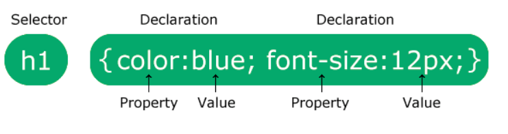

CSS is the language we use to style a Web page.
What is CSS?
- CSS stands for Cascading Style Sheets
- CSS describes how HTML elements are to be displayed on screen, paper, or in other media
- CSS saves a lot of work. It can control the layout of multiple web pages all at once
- External stylesheets are stored in CSS files
body {
background-color: lightblue;
}
A CSS rule consists of a selector and a declaration block.
CSS Syntax

- The selector points to the HTML element you want to style.
- The declaration block contains one or more declarations separated by semicolons.
- Each declaration includes a CSS property name and a value, separated by a colon.
- Multiple CSS declarations are separated with semicolons, and declaration blocks are surrounded by curly braces.
A CSS selector selects the HTML element(s) you want to style.
CSS Selectors
CSS selectors are used to "find" (or select) the HTML elements you want to style.
We can divide CSS selectors into five categories:
- Simple selectors (select elements based on name, id, class)
- Combinator selectors (select elements based on a specific relationship between them)
- Pseudo-class selectors (select elements based on a certain state)
- Pseudo-elements selectors (select and style a part of an element)
- Attribute selectors (select elements based on an attribute or attribute value)
CSS comments are not displayed in the browser, but they can help document your source code.
CSS Comments
Comments are used to explain the code, and may help when you edit the source code at a later date. Comments are ignored by browsers.
A CSS comment is placed inside the < style > element, and
starts with /* and ends with */ :
You can add comments wherever you want in the code:
/* This is a single-line comment */
p {
color: red;
}
p {
color: red; color: red; /* Set text color to red */
}
If there are two or more CSS rules that point to the same element, the selector with the highest specificity value will "win", and its style declaration will be applied to that HTML element.
Think of specificity as a score/rank that determines which style declaration is ultimately applied to an element.